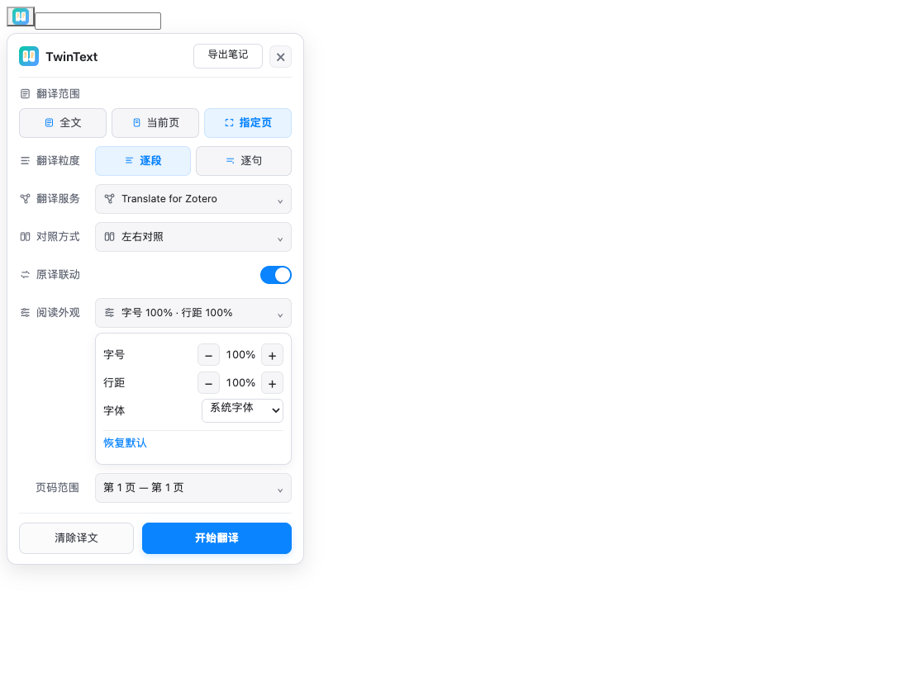

对照读，少找句
原文与译文保持同页、同段和相近位置，核对术语、引用和上下文时，少些来回搜索。
TwinText 是面向学术 PDF 的 Zotero 对照翻译与研究阅读插件。翻译全文、当前页或指定页，按原页面还原标题、双栏、公式与引用；支持多种对照排列、阅读外观调节、自选翻译服务，并把结果导出为 PDF、Zotero 笔记或离线 HTML。
从阅读到笔记导出，一条工作流完成。当前公开下载以插件更新源为准；部分进阶功能仍在候选版本验证中。

原文、译文、阅读位置、排版设置和导出结果，都留在 Zotero 的论文阅读流程里。
WHY TWINTEXT
选择翻译范围与粒度，决定原译文怎么排列，调字号与行距，暂停或继续长任务，最后把阅读结果沉淀成可以继续使用的文件与笔记。
原文与译文保持同页、同段和相近位置，核对术语、引用和上下文时，少些来回搜索。
标题、双栏、段落、图表区域与页面节奏尽量按原 PDF 保留，译文仍然属于原来的论文。
独立公式、行内数学片段、编号与引用被识别并保护，降低被翻译模型改写或打乱的风险。
导出为 PDF、可编辑 Zotero 笔记或离线 HTML，让阅读所得进入后续整理与写作。
PDF 对照翻译 · 1:1 版式还原
TwinText 以原 PDF 的字符位置与版面区域为约束，把译文重新放回对应页面。左右对照时，按相同页码、段落结构和页面位置阅读；配合原译联动，直接核对每一段、每个引用和公式。
还原度背后 · 持续打磨的页面算法
PDF 里的一行字，可能由多个字体、基线和碎片拼成。译文一变长，标题、双栏、脚注与公式就会相互挤占。我们反复把真实论文中的问题转成回归样例：追踪字符几何、约束空白边界、还原字号行距，再回到整页，检查这次修复是否影响了其他内容。
16 篇 · 265 页
从标题、双栏到旋转表格，用不同版面检验同一套规则。
611 / 611
覆盖翻译、排版与公式保护链路，逐步守住已修复的问题。
48 张 · 24 组
1.0.3 的 12 页浏览器回放，从文字结果追到页面位置。
数据来自不同历史阶段的开发验证，不是独立评测或所有 PDF 的准确率。1:1 表示按原页面结构还原的目标，复杂字体、扫描件和极端长译文仍可能出现差异。这里的积累是规则、算法与回归样例的持续迭代，不代表训练了自有大模型。查看测试范围与记录 →
公式混编 · 数学内容保护
论文里最容易出错的，往往是夹在句子中的一个变量、一个下标。TwinText 在翻译前识别数学片段，保护独立公式与行内表达式，再把译文和原数学内容按顺序组合回来。
文字与公式混排示意
翻译解释模型的自然语言，保留表达模型的符号。识别到的数学片段会参与完整性校验；当服务改动保护标记时，可退回只翻译自然语言片段。
功能全览 · 从开始翻译到读完一篇
从一段难懂的内容，到一篇需要深入整理的论文，按你的任务选择翻译范围、阅读方式和结果去向。
01 / 翻译范围
全文、当前页或指定页范围，配合翻译粒度设置。先处理眼前的问题，再继续整篇阅读。
02 / 阅读排列
左右对照、上下对照、仅看译文；调整译文面板位置，配合原译联动滚动，保持阅读连续。
03 / 阅读外观
选择字体、阅读密度，调节字号与行距。让高密度论文内容适应屏幕和你的阅读习惯。
04 / 内容保护
区分正文、图表、公式、页边信息和引用区域；通过过滤与保护规则，减少错误覆盖。
05 / 任务管理
暂停、继续与回到原文；按服务条件选择 1、2、3、4、6 或 8 路并发，复用已有译文缓存。
06 / 解析与服务
标准解析、可选本地版面增强和自定义翻译接口分开配置，适应论文复杂度与现有服务。
翻译模式 · 服务选择权在你手里
版式还原负责让论文保持可读，翻译服务负责生成译文。你可以按授权套餐使用 TwinText 官方翻译，也可以接入已经在使用的服务。
激活包含官方翻译权益的授权后，在插件内选择服务。服务地址与 API Key 由后台管理，减少首次配置步骤。
适合希望减少接口配置、集中开始阅读的用户。
支持 OpenAI 兼容接口、DeepL、小牛翻译与 Google Cloud Translation；也可通过 Translate for Zotero 兼容接入现有服务。
适合已有 API、需要更换模型或管理多个接口的用户。
插件授权与第三方 API 用量是两件事；使用自有 API 时，服务可用性、额度与费用由对应提供方决定。翻译文本会发送至你选择的服务，本地版面解析不等于翻译全程离线。
阅读与排版 · 让原文和译文各就其位
宽屏左右核对，窄屏上下阅读，熟悉内容时只看译文。配合位置联动、范围选择和缓存，不必每次从头开始。
在插件中滚动一侧，对应页面随之移动，减少反复查找页码与阅读位置。
从当前页或指定页开始，也能处理全文。按本次阅读目标安排任务。
符合当前配置的已有译文可复用；需要重译时，按任务清理或重新处理。
下面是可操作的网页示意，展示排列与样式变化；真实 PDF 翻译请在 Zotero 插件内使用。
A paper is more than a sequence of sentences. Its headings, equations and references help us understand how an argument develops.
Keeping the original and translation together makes it easier to compare terminology and return to the evidence.
论文不只是一串句子。标题、公式与参考文献，共同帮助我们理解论证如何展开。
把原文与译文放在一起，让术语核对与证据回溯更顺手，也让阅读能够沿着熟悉的页面继续。
窄屏下，左右对照可横向滑动查看，也可以切换为上下对照。
导出与笔记 · 让阅读成果继续流动
已有翻译结果可以继续用于整理、分享与写作。按需要导出 PDF、生成 Zotero 笔记，或保存可离线打开的 HTML。
对尚未完成的范围，可根据导出选项等待任务；不必为了换一种输出格式重新整理整篇内容。
PDF / 留存与分享
将原文页面图像与按页分组的双语内容组合为 PDF。译文内容会重排，便于留存与分享。
ZOTERO 笔记 / 继续编辑
按页面组织原译文，关联到对应文献条目；继续摘录、补充理解与整理研究笔记。
离线 HTML / 随时打开
把已有双语内容保存为 HTML 文件，在浏览器里离线查阅，方便归档与进一步处理。
插件阅读器以原页面几何为约束展示译文；当前 PDF 导出使用原文页图像与按页重排的双语内容，不等同于导出一份像素级 1:1 的译文 PDF。导出会遵循所选范围与过滤规则，原始 PDF 不会被覆盖。
工作流 · 从轻量开始，按需要增强
先用适合自己的配置开始，再根据文档结构增加解析能力。翻译服务、版面解析与阅读控制分别设置，减少不必要的折腾。
基于 PDF 的文字、字体与页面几何进行处理。内置 PP-DocLayoutV2 前端 WASM 方案可用于版面增强，无需为它单独安装 Python。
先把当前论文读起来可选接入 PP-DocLayoutV3、Heron 或 MinerU 等本地引擎。模型下载、运行环境与硬件需求取决于所选方案。
保留对解析方式的选择按当前页安排优先处理，暂停或继续翻译，随时返回原文。配合并发、缓存和过滤设置，适应长篇阅读。
让等待不打断阅读节奏版本更新 · 每一步都有来处
从字号与页边距，到原译联动、上下标与数学结构，持续收敛具体页面中的问题。
以下包含开发迭代记录。1.0.39 为待实机验收的候选版，不标作稳定发行版。
查看完整更新记录 →补齐根号、上下标、分式等结构识别，并减少普通术语被误判为公式。
保护数学片段的顺序、上下标和源样式，处理服务改写保护标记的情况。
在原文正文范围内利用空白，限制译文向页边与相邻区域扩展。
减少滚动回弹，修复短参考文献结尾与出版信息栏的对齐问题。
依据源几何还原文字样式，尝试利用同列空白后再进行有界字号调整。
保留论文的结构，选择适合自己的翻译服务，调出舒服的阅读样式，再把理解沉淀成可以继续使用的资料。